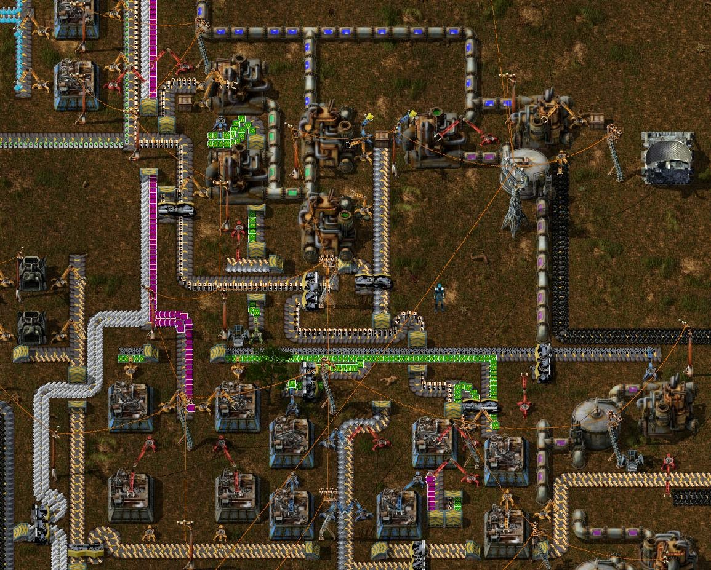
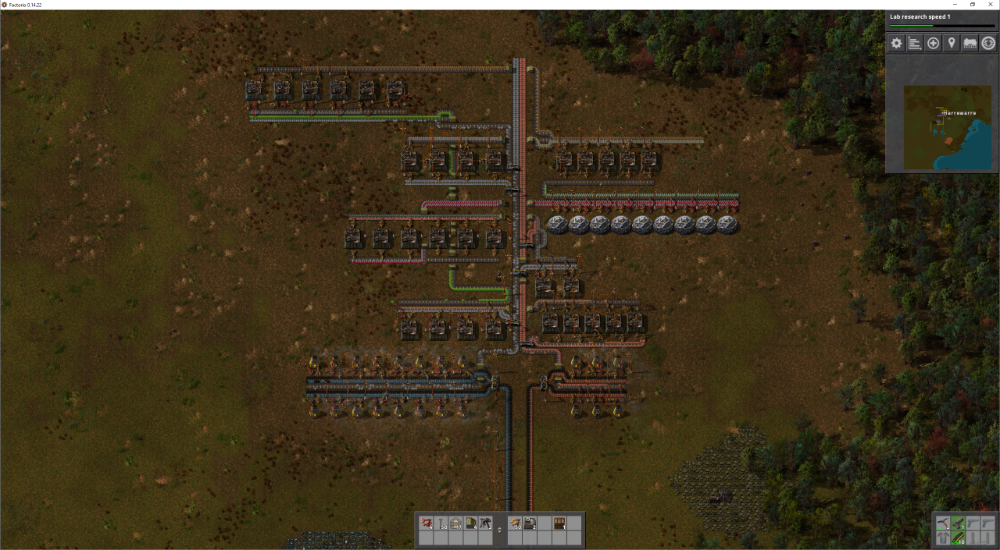

A game for programmers
I play video games occasionally, and I’ve recently discovered a game (that was in my Steam library for quite some time already) that gives me the same sensation as when I’m programming.
The game I’m talking about is Factorio.
The goal of the game is simple, build a factory that produces all the required parts necessary to launch a rocket that carries a satellite into space. Building the factory is what made me fall in love with this game.
It starts off slow when the game starts you of with a mining drill and a furnace so that you can smelt some ore into materials but as soon as you start gathering stuff and build more mining rigs and smelters things pick up and you can start automating production of the basic needs (coal, iron plates and copper plates).

So these basic things will let you create more complex components which… let you create even more complex components. At some point you’ll need plastic which requires you to process oil to… make even more complex stuff!
These resources aren’t going to move themselves around. To make transport easy you have conveyor belts. Handy stuff. This is also where the game starts shining. Planning out the factory as the need for production grows is where I spend almost all my time.
Nearing 30 hours played… not a single rocket was launched. I’m forever optimizing and refactoring parts of my factory.
The thing with all these resources on conveyor belts is that the more stuff you move around, the more complex the network of belts becomes and when things go overboard, you end up with spaghetti just like when you write sloppy unplanned bundles of code! This creates all sorts of openings for improvement and optimization. Scaling things up is possible with faster assemblers and belts, but scaling out can become a problem when more stuff is needed further down the production line.

Later stages of the game bring you robots for transport and construction relieve the spaghetti problem a bit but you still have keep planning all the way through. With some proper structure the game will let you build the most elaborate factories with ridiculous outputs.

My 5th attempt some kind of order during early stages of production.
It wouldn’t be an interesting game if it didn’t have enemies. Your factory will pollute the environment which will upset aliens living on the same planet as you. If the pollution goes to high, the will come and attack your factory (and you). Walls and guns will keep them out, but, as the game progresses and your factory grows, more and stronger aliens will come to ruin your day.
If you are looking for a game that will tickle your brain in stead of your reflexes, give this game a try. It presents problems similar to those found in programming and lets the player solve them in any way they want. If it at any point becomes stale, there is modding scene to make the game much more complex.
At some point, I’ll launch that rocket… eventually… some time in the future, but until then… make it work, make it better!